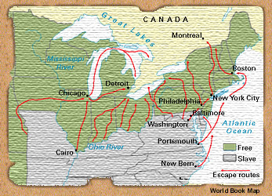
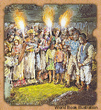

|
My name is Wilfred Cummings. But for many years, I was also known as Elijah Osborne by those with whom I worked on the underground railroad. This pathway to freedom, which relied on the humanity and hard work of many, helped slaves escape from the South to the Northern states and to Canada.
In the 1850's, before the Great War Between the States began, I was a successful free black merchant in Baltimore. Yet during this time, I, like many other Americans, black and white, defied the laws of our country to help right the great wrong of slavery.
 The underground railroad was neither underground nor a real railroad. It had no engines, no cars, and no tracks. It had no cargo except human souls. It did not run on coal or steam, but on faith, courage, and the hope for freedom. The railroad ran over land and over sea, through thick woods and swamps. It made stops at dusty attics, drafty barns, and secret rooms, anywhere fugitive slaves might evade greedy slave hunters or the hounds of the law.
 Our work on the railroad was conducted in secret, mostly under a cloak of darkness. We communicated through special signals and used railroad terms as code words. Hiding places were called stations, and people who helped the runaways were known as conductors. I worked as a stationkeeper, providing occasional hot meals and a hidden cellar in which fugitive slaves might rest during the day, so that they might have strength to travel again at night. Others gave much more. Some gave their lives.
My work on the underground railroad was the greatest experience of my life, and for no other work do I hold greater pride. I speak of these things now so that my family-and history-will not forget the many who devoted their lives to the underground railroad and to the great cause of abolition.
|